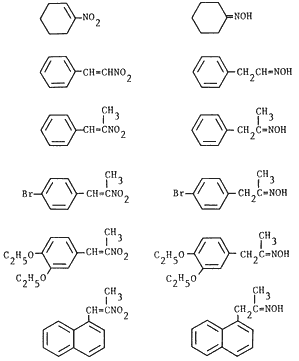

HTML by Rhodium
α,β-Unsaturated nitroalkenes are readily reduced by sodium hypophosphite to the corresponding oximes in the presence of palladium.
Catalytic transfer hydrogenation has found widespread use in the reduction of a variety of compounds1. Procedures involving relatively inexpensive inorganic hydrogen donors such as hypophosphorous acid and its salts2-5 are especially attractive. Although the reduction of nitroarenes2,3,6 has been extensively studied using transfer reduction techniques, the reduction of α,β-unsaturated nitroalkenes to the corresponding oximes has not been reported7,8.
Table I. Reduction of Nitroalkenes to Oximes
| Nitroalkene | Producta | Time | Yieldb | Ref. |
|  | 0.7 h |
62% |
23 | |
2 h |
56% |
13 | ||
2.5 h |
66% |
13 | ||
0.5 h |
40%c |
13 | ||
0.7 h |
72% | 13 | ||
13 h |
61%d |
13 | ||
We decided to explore the use of transfer hydrogenation methodology for the reduction of α,β-unsaturated nitroalkenes as part of our ongoing investigation of the reductions of these readily accessible precursors9-16. We wish to report that α,β-unsaturated nitroalkenes are readily reduced by sodium hypophosphite to the corresponding oximes in the presence of 5% palladium at room temperature17; only minor amounts of saturated nitroalkanes and carbonyl compounds are formed. The reaction appears to be general as evidenced by the formation of phenylacetaldehyde oxime from β-nitrostyrene and cyclohexanone oxime from 1-nitro-1-cyclohexene (Table I) which are not obtainable under acidic conditions13. However, dehalogenation, a typical transfer reduction side reaction for halogenated aromatic compounds18 was observed in the reduction of p-bromo-β-methyl-β-nitrostyrene; almost equal amounts p-bromophenylacetone oxime and phenylacetone oxime were obtained. Our results are summarized in Table I.
Commercially available samples of 1-nitro-1-cyclohexene, β-nitrostyrene, sodium hypophosphite and 5% palladium on charcoal (Aldrich) were used as received. Other nitroalkenes were prepared via published procedures10,19.
Synthesis of oximes. General Procedure.
The synthesis of phenylacetone oxime is representative of the procedure employed. To a solution of β-methyl-β-nitrostyrene (2 mmol, 0.326g in 7 mL THF) at room temperature was added palladium on charcoal (5%, 30% w/w of nitroalkene20) and an aqueous solution of sodium hypophosphite (0.7g in 5 mL). After stirring for 3 h, the mixture was filtered, saturated brine solution was added to the filtrate, and the product extracted into ether (3x30 mL). The combined ethereal extracts were dried (MgSO4) and the solvent removed under reduced pressure. The crude product (0.28g) was chromatographed over silica gel; elution with ether/petroleum ether (1:10) afforded 0.2g (67%) of phenylacetone oxime21 as an oil.